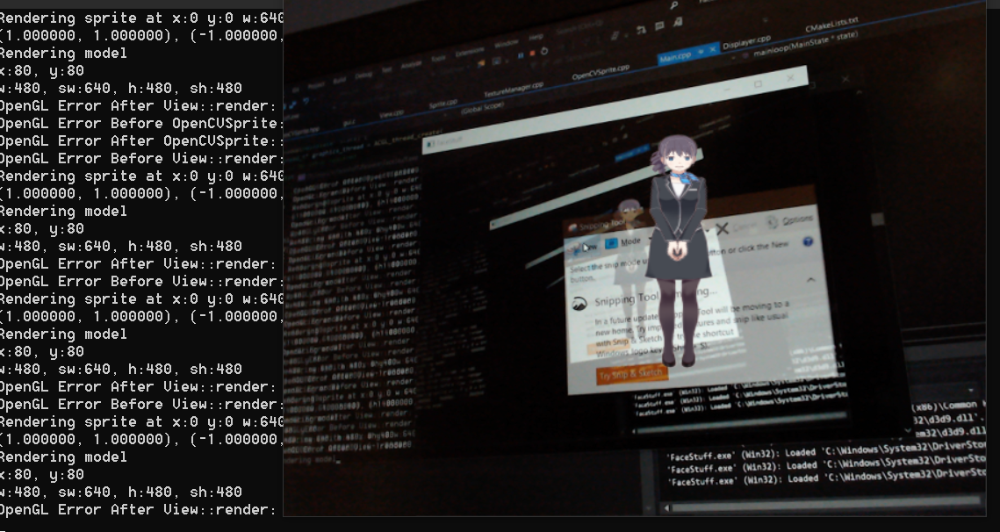

The slow burn project I mentioned earlier has concluded for now at least. Not for lack of progress, but actually because I completed a major milestone in actually getting it to work!
What does it do?
Currently, the application:
- Renders a sample Live2D model at 60fps
- Takes an image from the webcam and detects a face in it at 4fps
- Composites the two images together
This required the intersection of many different graphics technologies which I’m not sure were all made to go together:
- SDL creates the window and initializes an OpenGL context (together with GLEW to help with the dynamic loading that OpenGL requires)
- Live2D Cubism Native Framework loads the proprietary model format and renders it (when in the OpenGL context).
- OpenCV handles opening the webcam and detecting a face in it
- A Custom GUI Library built on top of SDL spawns the two threads to do Live2D rendering and OpenCV maths at the same time, as well as controlling the layout of the scene.
- And finally, raw OpenGL shaders that I had to find a good tutorial for to render the OpenCV data

I’ve put the project on hold for now, partly because I’ve accomplished a lot of what I wanted to do (get all these libraries working with one another at all), but mostly because School is coming up soon! I leave the 29th and start February 1st which is very close. Also I went skiing in the meantime which was very fun and put a damper in doing many things code-related during it. Anyways, see you next time!